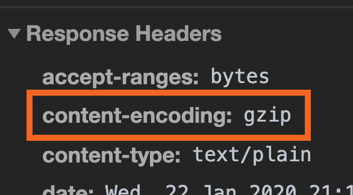
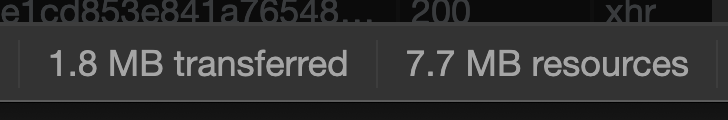

Dans tout projet WebGL, arrive la question de la performance
Votre site doit tourner à minimum 60fps sur un maximum de device (mobiles inclus), mais il doit aussi se charger vite
Il existe une multitude de techniques liées à Three.js qui vous permettront de conserver un framerate élevé avec un temps de chargement raisonnable
Le WebGL peut gérer des millions de polygones, mais moins il y en a, mieux c'est
Optimisez vos modèles afin d'avoir le minimum de polygones tout en gardant un rendu esthétiquement correct
Cela permettra aussi d'alléger le poids du site
Même si votre modèle est low poly, vous pouvez conserver des détails à l'aide des normal maps
Les normal maps simulent un relief pouvant être beaucoup plus précis que le modèle et coûtent peu en terme de performance
Utilisez des textures dont la résolution est une puissance de 2 et aussi petite que possible
Un trop grand nombre de textures envoyées à la carte graphique aura pour effet de saturer sa mémoire
Utilisez les formats les plus adaptés
Il est souvent intéressant d'utiliser deux JPG, l'un pour la couleur, l'autre pour l'alpha plutôt que d'utilisez un PNG
Par défaut, Three.js met à jour toutes les matrices de tous les modèles à chaque frame
Les matrices sont envoyées dans les shaders et permettent, par exemple, de placer les vertices selon la rotation/position/scale de l'objet et cela demande beaucoup de calculs
Si votre objet ne bouge pas, mettez à jour la matrice manuellement et passez sa propriété matrixAutoUpdate sur false
const mesh = new THREE.Mesh(geometry, material)
mesh.matrixAutoUpdate = false
mesh.updateMatrix()
Pour faire le rendu d'une ombre et d'une partie des lights, Three.js place la caméra à la place de la lumière et fait un rendu
Ce qui est visible sera considéré comme éclairé et ce qui ne l'est pas comme étant dans l'ombre
Si l'ombre est dissipée, Three.js doit faire plusieurs rendus sous différents angles
Cette technique est extrèmement lourde et il vaut mieux trouver des alternatives
Une première technique consiste à baker les ombres et lumières
Cela veut dire que l'ombre et l'éclairage sont directement dans la texture
⚠️ impossible de faire bouger les lumières
Une seconde technique consiste à faire de fausses ombres et lumières
On place un plan ayant une texture similaire à l'ombre ou la lumière au bon endroit et on le met à jour en même temps que l'objet
⚠️ l'ombre ou la lumière est plate et il va être difficile d'éclaire des zones anguleuses (par exemple)
Si vous utilisez tout de même les ombres de Three.js, mais que la scène est statique, désactivez la mise à jour automatique des ombres
renderer.shadowMap.autoUpdate = false // Deactivate shadow auto update
renderer.shadowMap.needsUpdate = true // Update shadow once at start
Les BufferGeometry sont plus efficaces que les Geometry
Mais les données sont plus difficiles à manipuler
Toutes les géométries de base de Three.js existe en version buffer et non buffer
const sphereGeometry = new THREE.SphereBufferGeometry(5, 32, 32)
Beaucoup d'écran possèdent des pixel ratio supérieur à 1
Le pixel ratio correspond à la densité de pixel
Par exemple, un écran retina possède un pixel ratio de 2. Cela veut dire qu'il y aura 4 fois plus de pixels (x2 en largeur et x2 en hauteur)
Cela permet d'avoir une image plus précise, mais cela pose des problèmes de performance
Three.js gère cela avec la méthode setPixelRatio
Il est possible de récupérer le pixel ratio de l'écran concerné avec window.devicePixelRatio
renderer.setPixelRatio(window.devicePixelRatio)
Le mieux est de le limiter à 2 car, au dela, cela pose trop de problèmes de performance
renderer.setPixelRatio(Math.min(window.devicePixelRatio, 2))
Le frustum culling est géré dans Three.js est consiste à ne rendre que les objets qui sont affichés dans l'angle de la caméra
Une bonne astuce, mais qui impacte grandement le rendu consiste à réduire l'angle de vue de la caméra
Moins il y a d'éléments visibles simultanément, plus le rendu sera léger
const camera = new THREE.PerspectiveCamera(45, sizes.width / sizes.height)
Plus il y a de géométries différentes, plus le rendu prendra du temps
Une bonne pratique consiste à utiliser plusieurs fois la même géométrie lorsque les meshes ont la même forme
const geometry = new THREE.SphereBufferGeometry(5, 32, 32)
for(let i = 0; i < 1000; i++)
{
const mesh = new THREE.Mesh(
geometry,
new THREE.MeshBasicMaterial({ color: 0xff0000 })
)
scene.add(mesh)
}
Comme pour les Geometries, il est possible de mutualiser les Materials
const geometry = new THREE.SphereBufferGeometry(5, 32, 32)
const material = new THREE.MeshBasicMaterial({ color: 0xff0000 })
for(let i = 0; i < 1000; i++)
{
const mesh = new THREE.Mesh(geometry, material)
scene.add(mesh)
}
Le post-process n'est pas forcément mauvais pour les performances, mais certains effets peuvent avoir de grave conséquences
Particulièrement les flous et lueurs qu'il faut éviter autant que possible
La compréssion Draco permet de réduire jusqu'à 80% du poids d'un model
Elle est un peu difficile à mettre en place, mais fonctionne très bien avec les fichiers GLTF
⚠️ C'est le navigateur du visiteur qui va devoir décompresser le fichier, ce qui peut entrainer des freezes
La majorité des serveurs supportent la compression GZIP
Le serveur va simplement compresser les fichiers avant de les envoyer au visiteur dont le navigateur s'occupera automatiquement de décompresser le fichier

Cela créé une nette différence entre le poids téléchargé et le poids final

Par défaut, la majorité des serveurs ne gzip pas les models 3D
Il faut leur indiquer de considérer ces modèles comme tu text à compresser
Pour un serveur Apache, dans le fichier .htaccess
Addtype text/plain .glb
Addtype text/plain .gltf
AddOutputFilterByType DEFLATE text/plain
AddOutputFilterByType DEFLATE text/html
AddOutputFilterByType DEFLATE text/xml
AddOutputFilterByType DEFLATE text/css
AddOutputFilterByType DEFLATE application/xml
AddOutputFilterByType DEFLATE application/xhtml+xml
AddOutputFilterByType DEFLATE application/rss+xml
AddOutputFilterByType DEFLATE application/javascript
AddOutputFilterByType DEFLATE application/x-javascript
AddOutputFilter DEFLATE .shtml